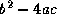

Common Lisp the Language, 2nd Edition

The
compiler is a program that may make code run faster by translating
programs into an implementation-dependent form that can
be executed more efficiently by the computer. Most of the time
you can write programs without worrying about the compiler;
compiling a file of code should produce an equivalent but more
efficient program. When doing more esoteric things, you may need to
think carefully about what happens at ``compile time'' and what happens
at ``load time.'' Then the difference between the syntaxes #.
and #, becomes important, and the eval-when construct
becomes particularly useful.


X3J13 voted in January 1989
(SHARP-COMMA-CONFUSION) to remove #, from the language.

Most declarations are not used by the Common Lisp interpreter; they may be used to give advice to the compiler. The compiler may attempt to check your advice and warn you if it is inconsistent.
Unlike most other Lisp dialects, Common Lisp recognizes special declarations in interpreted code as well as compiled code. This potential source of incompatibility between interpreted and compiled code is thereby eliminated in Common Lisp.
The internal workings of a compiler will of course be highly implementation-dependent. The following functions provide a standard interface to the compiler, however.
[Function]
compile name &optional definition
If definition is supplied, it should be a lambda-expression,
the interpreted function to be compiled. If it is not supplied,
then name should be a symbol with a definition that is a
lambda-expression; that definition is compiled
and the resulting compiled code is put back into the symbol
as its function definition.
X3J13 voted in October 1988 (COMPILE-ARGUMENT-PROBLEMS)
to restate the preceding paragraph more precisely and to extend the
capabilities of compile.
If the optional definition argument is supplied,
it may be either a lambda-expression (which is coerced to a function)
or a function to be compiled; if no definition is supplied,
the symbol-function of the symbol is extracted and compiled.
It is permissible for the symbol to have a macro definition rather than
a function definition; both macros and functions may be compiled.
It is an error if the function to be compiled was defined interpretively
in a non-null lexical environment. (An implementation is free to extend
the behavior of compile to compile such functions properly, but
portable programs may not depend on this capability.) The consequences
of calling compile on a function that is already compiled
are unspecified.
The definition is compiled and a compiled-function object produced.
If name is a non-nil
symbol, then the compiled-function object is installed as the
global function definition of the symbol and the symbol is returned.
If name is nil, then the compiled-function object itself is returned.
For example:
(defun foo ...) => foo ¯;A function definition
(compile 'foo) => foo ;Compile it
;Now foo runs faster (maybe)
(compile nil
'(lambda (a b c) (- (* b b) (* 4 a c))))
=> a compiled function of three arguments that computes 
X3J13 voted in June 1989 (COMPILER-DIAGNOSTICS) to specify that
compile returns two additional values
indicating whether the compiler issued any diagnostics
(see section 25.1.1).
X3J13 voted in March 1989 (FUNCTION-NAME) to extend compile
to accept as a name any function-name (a symbol or a list
whose car is setf-see section 7.1).
One may write (compile '(setf cadr)) to compile the setf
expansion function for cadr.
[Function]
compile-file input-pathname &key :output-file
The input-pathname must be a valid file specifier, such as a pathname.
The defaults for input-filename are taken from the variable
*default-pathname-defaults*.
The file should be a Lisp source file;
its contents are compiled and written as a binary object file.
X3J13 voted in March 1989 (COMPILER-VERBOSITY) to add two new
keyword arguments :verbose and :print
to compile-file by analogy with load.
The new function definition is as follows.
[Function]
compile-file input-pathname &key :output-file :verbose :print
The :verbose argument (which defaults to the value of *compile-verbose*), if true, permits compile-file to print a message in the form of a comment to *standard-output* indicating what file is being compiled and other useful information.
The :print argument (which defaults to the value of *compile-print*), if true, causes information about top-level forms in the file being compiled to be printed to *standard-output*. Exactly what is printed is implementation-dependent; nevertheless something will be printed.
X3J13 voted in March 1988 (PATHNAME-STREAM) to specify exactly which streams may be used as pathnames (see section 23.1.6).
X3J13 voted in June 1989 (PATHNAME-WILD) to clarify that supplying a wild pathname as the input-pathname argument to compile-file has implementation-dependent consequences; compile-file might signal an error, for example, or might compile all files that match the wild pathname.
X3J13 voted in June 1989 (PATHNAME-LOGICAL) to require compile-file
to accept logical pathnames (see section 23.1.5).
The :output-file argument may be used to specify an output pathname; it defaults in a manner appropriate to the implementation's file system conventions.
X3J13 voted in June 1989 (COMPILER-DIAGNOSTICS) to specify that
compile-file returns three values: the truename of the output
file (or nil if the file could not be created) and two values
indicating whether the compiler issued any diagnostics
(see section 25.1.1).
X3J13 voted in October 1988 (COMPILE-FILE-PACKAGE) to specify that compile-file, like load, rebinds *package* to its current value. If some form in the file changes the value of *package*, the old value will be restored when compilation is completed.
X3J13 voted in June 1989 (COMPILE-FILE-SYMBOL-HANDLING) to specify restrictions on conforming programs to ensure consistent handling of symbols and packages.
In order to guarantee that compiled files can be loaded correctly, the user must ensure that the packages referenced in the file are defined consistently at compile and load time. Conforming Common Lisp programs must satisfy the following requirements.
These requirements are merely an explicit statement of the status quo, namely that users cannot depend on any particular behavior if the package environment at load time is inconsistent with what existed at compile time.
X3J13 voted in March 1989 (IN-SYNTAX) to specify that compile-file must bind *readtable* to its current value at the time compile-file is called; the dynamic extent of the binding should encompass all of the file-loading activity. This allows a portable program to include forms such as
(in-package "FOO") (eval-when (:execute :load-toplevel :compile-toplevel) (setq *readtable* foo:my-readtable))
without performing a net global side effect on the loading environment. Such statements allow the remainder of such a file to be read either as interpreted code or by compile-file in a syntax determined by an alternative readtable.
X3J13 voted in June 1989 (LOAD-TRUENAME) to require that compile-file bind two new variables *compile-file-pathname* and *compile-file-truename*; the dynamic extent of the bindings should encompass all of the file-compiling activity.
[Variable]
*compile-verbose*
X3J13 voted in March 1989 (COMPILER-VERBOSITY) to add *compile-verbose*. This variable provides the default for the :verbose argument to compile-file. Its initial value is implementation-dependent.
A proposal was submitted to X3J13 in October 1989 to rename this *compile-file-verbose* for consistency.
[Variable]
*compile-print*
X3J13 voted in March 1989 (COMPILER-VERBOSITY) to add *compile-print*. This variable provides the default for the :print argument to compile-file. Its initial value is implementation-dependent.
A proposal was submitted to X3J13 in October 1989 to rename this *compile-file-print* for consistency.
[Variable]
*compile-file-pathname*
X3J13 voted in June 1989 (LOAD-TRUENAME) to introduce *compile-file-pathname*; it is initially nil but compile-file binds it to a pathname that represents the file name given as the first argument to compile-file merged with the defaults (see merge-pathname).
[Variable]
*compile-file-truename*
X3J13 voted in June 1989 (LOAD-TRUENAME) to introduce *compile-file-truename*; it is initially nil but compile-file binds it to the ``true name'' of the pathname of the file being compiled. See truename.
[Special Form]
load-time-value form [read-only-p]
X3J13 voted in March 1989 (LOAD-TIME-EVAL) to add a mechanism for delaying evaluation of a form until it can be done in the run-time environment.
If a load-time-value expression is seen by compile-file, the compiler performs its normal semantic processing (such as macro expansion and translation into machine code) on the form, but arranges for the execution of the form to occur at load time in a null lexical environment, with the result of this evaluation then being treated as an immediate quantity (that is, as if originally quoted) at run time. It is guaranteed that the evaluation of the form will take place only once when the file is loaded, but the order of evaluation with respect to the execution of top-level forms in the file is unspecified.
If a load-time-value expression appears within a function compiled with compile, the form is evaluated at compile time in a null lexical environment. The result of this compile-time evaluation is treated as an immediate quantity in the compiled code.
In interpreted code, form is evaluated (by eval) in a null lexical environment and one value is returned. Implementations that implicitly compile (or partially compile) expressions passed to eval may evaluate the form only once, at the time this compilation is performed. This is intentionally similar to the freedom that implementations are given for the time of expanding macros in interpreted code.
If the same (as determined by eq) list (load-time-value form) is evaluated or compiled more than once, it is unspecified whether the form is evaluated only once or is evaluated more than once. This can happen both when an expression being evaluated or compiled shares substructure and when the same expression is passed to eval or to compile multiple times. Since a load-time-value expression may be referenced in more than one place and may be evaluated multiple times by the interpreter, it is unspecified whether each execution returns a ``fresh'' object or returns the same object as some other execution. Users must use caution when destructively modifying the resulting object.
If two lists (load-time-value form) are equal but not eq, their values always come from distinct evaluations of form. Coalescing of these forms is not permitted.
The optional read-only-p argument designates whether the result may be considered a read-only constant. If nil (the default), the result must be considered ordinary, modifiable data. If t, the result is a read-only quantity that may, as appropriate, be copied into read-only space and may, as appropriate, be shared with other programs. The read-only-p argument is not evaluated and only the literal symbols t and nil are permitted.
This new feature addresses the same set of needs as the now-defunct #, reader syntax but in a cleaner and more general manner. Note that #, syntax was reliably useful only inside quoted structure (though this was not explicitly mentioned in the first edition), whereas a load-time-value form must appear outside quoted structure in a for-evaluation position.
See make-load-form.
[Function]
disassemble name-or-compiled-function
The argument should be a function object, a lambda-expression, or a symbol with a function definition. If the relevant function is not a compiled function, it is first compiled. In any case, the compiled code is then ``reverse-assembled'' and printed out in a symbolic format. This is primarily useful for debugging the compiler, but also often of use to the novice who wishes to understand the workings of compiled code.
X3J13 voted in March 1988 (DISASSEMBLE-SIDE-EFFECT)
to clarify that when disassemble compiles a function, it never
installs the resulting compiled-function object in the
symbol-function of a symbol.
X3J13 voted in March 1989 (FUNCTION-NAME) to extend disassemble to accept as a name any function-name (a symbol or a list whose car is setf - see section 7.1). Thus one may write (disassemble '(setf cadr)) to disassemble the setf expansion function for cadr.
[Function]
function-lambda-expression fn
X3J13 voted in January 1989 (FUNCTION-DEFINITION) to add a new function to allow the source code for a defined function to be recovered. (The committee noted that the first edition provided no portable way to recover a lambda-expression once it had been compiled or evaluated to produce a function.)
This function takes one argument, which must be a function, and returns three values.
The first value is the defining lambda-expression for the function, or nil if that information is not available. The lambda-expression may have been preprocessed in some ways but should nevertheless be of a form suitable as an argument to the function compile or for use in the function special form.
The second value is nil if the function was definitely produced by closing a lambda-expression in the null lexical environment; it is some non-nil value if the function might have been closed in some non-null lexical environment.
The third value is the ``name'' of the function; this is nil if the name is not available or if the function had no name. The name is intended for debugging purposes only and may be any Lisp object (not necessarily one that would be valid for use as a name in a defun or function special form, for example).
[Macro]
with-compilation-unit ({option-name option-value}*) {form}*
X3J13 voted in March 1989 (WITH-COMPILATION-UNIT) to add with-compilation-unit, which executes the body forms as an implicit progn. Within the dynamic context of this form, warnings deferred by the compiler until ``the end of compilation'' will be deferred until the end of the outermost call to with-compilation-unit. The results are the same as those of the last of the forms (or nil if there is no form).
Each option-name is an unevaluated keyword; each option-value is evaluated. The set of keywords permitted may be extended by the implementation, but the only standard option keyword is :override; the default value for this option is nil. If with-compilation-unit forms are nested dynamically, only the outermost such call has any effect unless the :override value of an inner call is true.
The function compile-file should provide the effect of
(with-compilation-unit (:override nil) ...)
around its code.
Any implementation-dependent extensions to this behavior may be provided only as the result of an explicit programmer request by use of an implementation-dependent keyword. It is forbidden for an implementation to attach additional meaning to a conforming use of this macro.
Note that not all compiler warnings are deferred. In some implementations, it may be that none are deferred. This macro only creates an interface to the capability where it exists, it does not require the creation of the capability. An implementation that does not defer any compiler warnings may correctly implement this macro as an expansion into a simple progn.